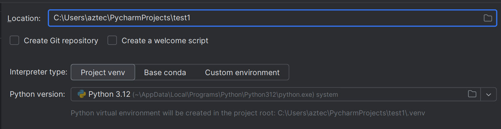
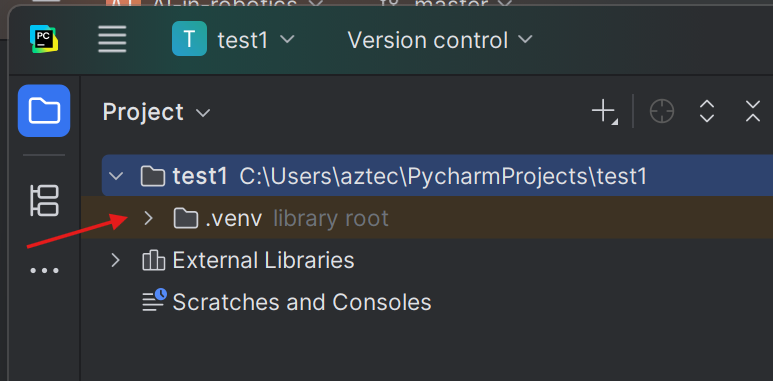
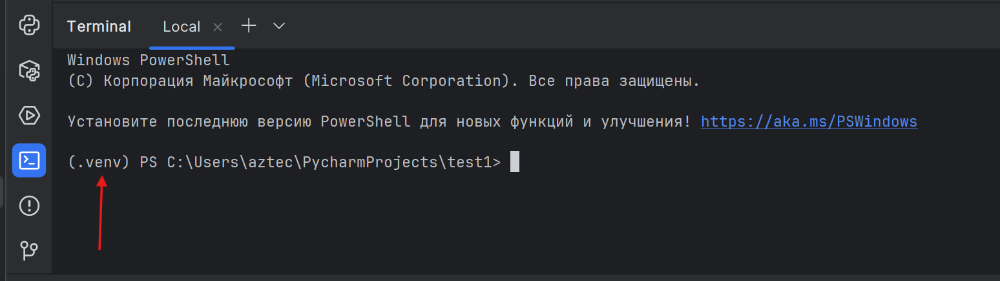
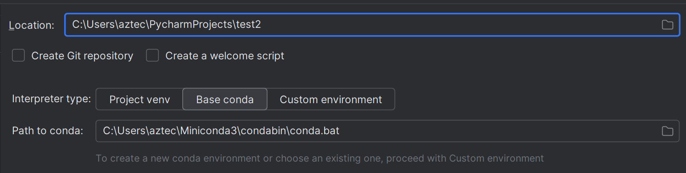
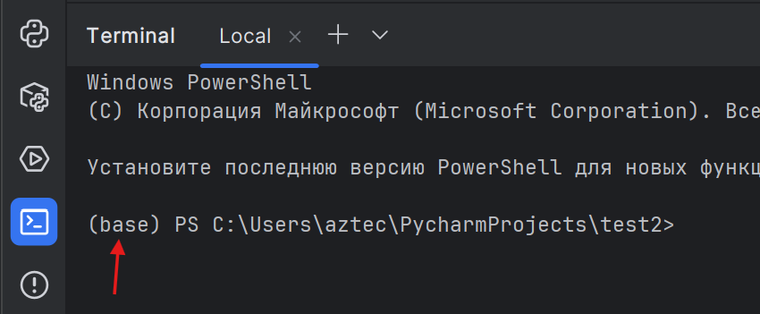
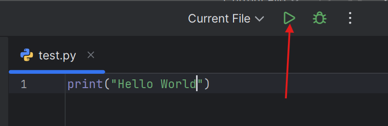

PyCharm
PyCharm — кроссплатформенная интегрированная среда разработки для языка программирования Python, разработанная компанией JetBrains.
- Основные функции бесплатные.
- Есть учебная лицензия, но недоступна в Казахстане. :(
Официальный сайт: https://www.jetbrains.com/pycharm/
Установка
- Скачать по ссылке https://www.jetbrains.com/pycharm/download/
- Установить. üóø
PyCharm vs IDLE
| Критерий | PyCharm (единый с 2025.1) | IDLE |
|---|---|---|
| Что это | Полноценная IDE: проекты, навигация, интеграции | Встроенная учебная среда: редактор + REPL |
| Для кого | Учёба и реальные проекты | Первые шаги, маленькие скрипты |
| Установка | Отдельная установка; базовое ядро бесплатно; 30-дн. Pro-триал | Ставится вместе с Python |
| Подсветка и автодополнение | Расширенные, с анализом кода | Базовые |
| Отладка | Полный UI: брейкпоинты, шаги, watch | Простой отладчик |
| Тесты | Интеграция pytest/unittest | Ручной запуск |
| Git и управление версиями | Встроено | Нет |
| Виртуальные окружения | Создание и привязка venv/conda | Только вне IDLE |
| Плагины / Marketplace | Есть Marketplace | Нет |
| Jupyter | Поддержка ноутбуков в бесплатной части | Нет |
| AI-функции | JetBrains AI Assistant в Pro; расширенные функции по подписке | Нет |
| Итог | Для серьёзной учёбы и работы | Для старта и учебных примеров |
Виртуальные среды
Виртуальная среда — это «песочница» для проекта. Внутри лежит свой интерпретатор Python и свои пакеты. Проекты не конфликтуют друг с другом, а система остаётся чистой. Например, для одного проекта нужен Python 3.12 а для другого Python 3.9. Для каждого проекта создаётся своя виртуальная среда с нужной версией. То же самое касается версий библиотек.
Зачем это нужно:
- Разные проекты требуют разные версии библиотек.
- Легко повторить окружение на другом компьютере.
- Безопаснее экспериментировать: сломали среду — удалили папку, проект цел.
В IDLE нет возможности использовать виртуальные среды. В PyCharm при создании проекта есть возможность создать среду venv или conda.
venv
venv — стандартный и лёгкий. Подходит для большинства задач: веб-проект, скрипты, обучение. Идёт вместе с Python.
# Windows (PowerShell)
py -3.12 -m venv .venv
.\.venv\Scripts\Activate.ps1
# Windows (Cmd)
py -3.12 -m venv .venv
.\.venv\Scripts\activate.bat
# macOS / Linux
python3 -m venv .venv
source .venv/bin/activate
Работа внутри среды
python -m pip install --upgrade pip
pip install <пакет>
pip freeze > requirements.txt # зафиксировать зависимости
pip install -r requirements.txt # восстановить на другом ПК
deactivate
Когда выбрать venv: нужен простой, быстрый старт без тяжёлых нативных зависимостей.
В PyCharm при создании проекта просто нужно выбрать версию python (можно установить нужную версию прямо там).

Будет создана папка .venv

В терминале будет показано (.venv) если среда активирована. При запуске проекта среда активируется автоматически.

Можно создать несколько сред, но это НЕ рекомендуется делать.
Удалить и пересоздать venv:
deactivate; if (Test-Path .venv) { Remove-Item .venv -Recurse -Force }
py -3.12 -m venv .venv
Set-ExecutionPolicy -Scope Process Bypass -Force
.\.venv\Scripts\Activate.ps1
if (Test-Path requirements.txt) { pip install -r requirements.txt }
conda
conda — менеджер окружений + пакетов. Сильная сторона — научный стек, пакеты с C/Fortran, CUDA/GPU, а также не только Python. Существует Miniconda, mamba или Anaconda. Сам PyCharm предлагает установить Miniconda - то лучший вариант.
Разница
- Anaconda
«Толстая» сборка: conda + Navigator + сотни пакетов сразу. Плюс — можно работать офлайн «из коробки». Минусы — вес и долгие обновления.
- Miniconda
Минимальный установщик: conda + Python. Ставите только нужное. Плюсы — лёгкая, чистая. Минус — всё докачивать самим. Navigator ставится отдельно при желании.
- mamba
Быстрая замена командам conda (тот же формат команд). Решает зависимости быстрее и качает параллельно. Ставится в тот же base или берите дистрибутивы с mamba сразу.
- Miniforge / Mambaforge
Мини-сборки с mamba и каналом conda-forge по умолчанию. Удобно, если живёте на conda-forge.


Создание отдельного окружения:
Вариант 1:
Среда создаётся в папке самой conda, например C:\Users\aztec\miniconda3\envs
conda create -n proj python=3.12
conda activate proj
conda deactivate #декативировать

Или вариант 2:
Среда создаётся в папке проекта
conda create -p .\.conda python=3.12
conda activate .\.conda
conda deactivate #декативировать
Начало работы
- Создать файлы

- Написать код
- Запустить код
